Taken from the paper A decision-theoretic generalization of on-line learning and an application to boosting. Freund and Schapire 1995.
We are interested from section 4 on.
Language:
X is the domain.
A concept is a Boolean function 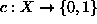 .
A concept class is a collection of concepts.
The learner has access to an oracle providing labeled examples of the form (x, c(x)), where x is chosen randomly according to some fixed but unknown and arbitrary distribution D on X, and 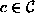 is the target concept.
After some time , the learner outputs a hypothesis:  .
.
the error of the hypothesis is  where x follows distribution D.
where x follows distribution D.
A strong PAC-leraning algorithm is an algorithm, that given  , access to random examples, outputs with probability 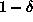
a hypothesis with error at most .
, access to random examples, outputs with probability 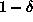
a hypothesis with error at most .
A weak learner, is one that has  , 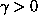 .
, 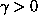 .
It does a little bit better than guessing.
Boosting is a method for turning weak learners into strong learners.
The Boosting algorithm proceeds as follows:
Input: the examples, the distribution D over the examples, the weak learning algorithm and the number of iterations, T.
Initialize the weight vector: 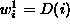 , 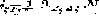 .
Do for 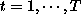
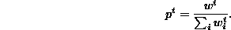

Output the hypothesis:
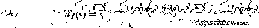